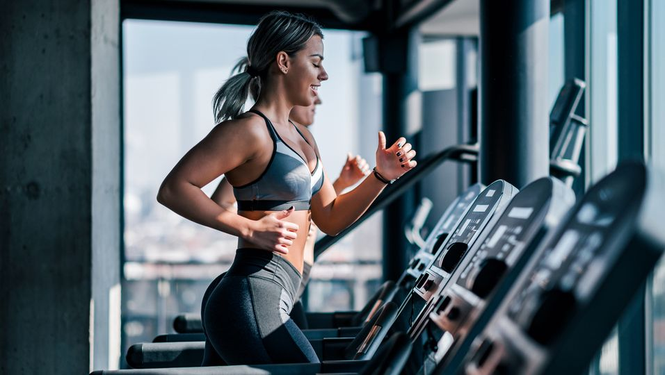

5 Simple Tips to Stay Active Every Day
October 12, 2023 by Ariel Williams

Leading a healthy lifestyle doesn’t require drastic changes. Small, consistent efforts can have a lasting impact on your well-being. Start by walking more—take the stairs instead of the elevator, park further from your destination, or enjoy a walk during your lunch break.
Incorporating simple activities like stretching or bodyweight exercises at home helps boost circulation, improve flexibility, and strengthen muscles. The goal is to keep moving, no matter how busy your schedule is. Remember, even 10 minutes of physical activity each day can lead to positive changes in the long run.
The Power of Healthy Eating
October 5, 2023 by Ariel Williams
Food is more than just fuel—it’s a foundation for energy, focus, and mental clarity. A balanced diet that includes fresh fruits, vegetables, lean proteins, and whole grains can have a transformative effect on both your physical health and emotional well-being.
Instead of focusing on restrictive diets, embrace mindful eating. This means paying attention to hunger cues, enjoying meals without distractions, and focusing on portion sizes. Hydration is also key, so keep water nearby throughout the day. Health isn’t just about what you eat, but how you nurture your body.